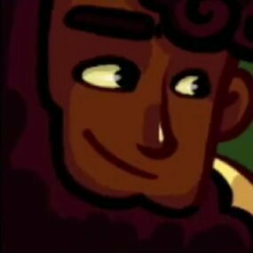
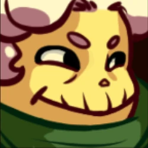
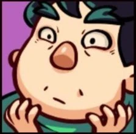
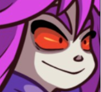
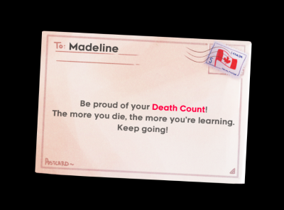

Madeline is a girl who wants to climb Celeste Mountain to run away from her problems. Over the course of the game, she meets a host of characters including:
 Theo, a social media influencer who is climbing the mountain to retrace the footsteps of his grandfather in the search of his own meaning,
 An old woman who acts as a voice of doubt for Madeline
 Mr. Oshiro, who is a ghost who runs the Celestial Resort, and is plagued by self-doubt and an inability to move on.
 The Part of Madeline, referred to by the fans as Badeline, who antagonizes Madeline and represents the part of her that she is trying to run from by climbing the mountain.
Synopsis
The story starts with Madeline crossing a bridge that crumbles behind her. She meets the old lady, who attempts to discourage her from climbing the mountain, but she presses on. Along the way, she meets Theo, who originally acts aloof and doesn’t respect Madeline very much, though he treats her like a kind stranger.
Eventually, Madeline comes across a mirror, where she meets Badeline. Badeline immediately assumes the role of the evil Doppelgängerin, creating copies of Madeline that chase her around the level, copying her every movement. Once Madeline escapes Badeline, she comes across a payphone where she receives calls from people in her past who invalidate her in subtle ways before she realizes the entire sequence up until this point was a dream. She meets Theo again, who in his lack of respect for Madeline, snaps a picture of her without her consent (in which she looks terrible).
Madeline continues her climb until she comes across the Celestial Resort, a hotel run by a ghost named Mr. Oshiro, who talks himself into attempting to force Madeline to rent a room at the hotel, which is dilapidated, cluttered beyond belief, and full of creatures that Mr. Oshiro releases from his body when he doubts himself. You see, Mr. Oshiro is still in denial about his own death, and plays as if the hotel was still in running condition. Madeline, of course, wants to climb, and is only passing through the hotel along the way to her destination, the peak. So, when the pair finally arrive at the Presidential Suite that Mr. Oshiro had been attempting to convince Madeline to rent, he doubles down and insists that she stay. Madeline firmly denies him, but he insists until she is backed into a corner, when finally, Badeline comes out and rebukes him, mocking him cruelly, but saving Madeline from the situation. Mr. Oshiro turns into a snow-monster and chases Madeline until she is cornered on a bridge to nowhere, which Oshiro attacks until it collapses under them both. Thankfully, the fall was short, and this near-death experience is enough to calm Oshiro down, and he tells Madeline to leave, as the hotel is officially closed.
Madeline runs away up the Golden Ridge, eventually coming across the old lady again, who mocks her once more for giving Oshiro a chance. She presses on and comes across Theo and a gondola over a chasm. She and Theo decide to ride the gondola, and at first they simply chat, however anxiety quickly begins to overtake Madeline, until Badeline appears and stops the gondola right at the middlepoint, leaving them both to teeter over the chasm. This sends Madeline into a panic attack, and Theo, reacting quickly, teaches her a coping strategy by envisioning a feather and attempting to keep it afloat. The player is tasked with playing out this coping strategy by literally controlling Madeline’s breath, and keeping the feather in its place. After Madeline escapes the panic attack, the gondola continues as if nothing had happened to it in the first place, and Theo shows her another selfie he took without her consent (as she was descending into panic, no less. She looks even worse in this one).
Madeline and Theo press forward until they come across the Mirror Temple, which Theo drags Madeline into, since he wants pictures for his social media. In this temple, Theo gets trapped behind a mirror, and Madeline has to find a way to save him. She does this by traversing the layer into the mirror world herself, which upon doing so confronts her with Badeline once more. The two argue, Madeline upset that she’s being subjected to this by Badeline, while Badeline denies culpability, claiming she warned Madeline to stay away from the Mountain, and that all of what was occurring was simply a reflection of Madeline’s inner world. Eventually, Madeline finds Theo, who has been trapped in a crystal, and saves him from the temple and the tentacled creatures that inhabit it (which bear a resemblance to Dungeons and Dragons’ Beholders).
After escaping the temple, Theo and Madeline have a long conversation about their own lives and their motives for climbing the mountain. Celeste divulges that she is climbing the mountain to run away from her problems caused by her depression and anxiety and to escape the routine she felt trapped in, and Theo discloses that he’s searching for meaning after having tried and failed to find fulfillment in work. Madeline discloses that she plans on leaving Badeline behind on the mountain, to finally be able to escape from these problems that have been holding her down, and the pair head off to sleep after Theo takes one last selfie with Madeline on the mountain, this one the first time Madeline herself asked for the picture. And this time, she looks like herself in the picture.
As Madeline drifts off to sleep, she begins to have a dream, where she rides the feathers from her coping mechanism up to the night sky where she floats and finally confronts Badeline, telling her she plans on leaving her behind for good on the mountain. Badeline lashes out and throws Madeline down off of the mountain, casting her into a pit on the side of it into the depths. In the pit, Madeline reflects on everything that’s happened on the mountain and decides that she will forgive Badeline and work with her to climb up to the peak of the mountain. Badeline herself needs convincing, and Madeline has to literally chase her deeper into the pit in order to finally be able to reconcile.
The final part of the game is Madeline and Badeline working together to climb up the mountain, and they reach the peak together.
Part of You
Celeste’s narrative is as subtle as a sledgehammer and as deep as the Madiana Trench. The writing is completely candid about Madeline’s problems. It’s all expo’d during Chapter 6.
Lesser writing would flounder in such a flagrant flouting of traditional narrative rules. But when Madeline tells her story during the long conversation with Theo at the campfire, we never feel as though we’re missing anything---we don’t feel rushed into the details.
This is where Celeste bucks traditional narrative and does something only a video game can. The entire gameplay of Celeste is the narrative. Celeste is a highly precise platformer with simple, fluid controls. Each chapter has associated mechanics which build up in difficulty until the end, where you are expected to use each of the mechanics fluently to achieve rather difficult feats of platforming. The final level combines all of these mechanics and becomes much more precise than the preceding ones. These mechanics combine in ways that create some long and arduous platforming challenges for the player, making the game quite difficult (which it has a reputation for being).
Part of the point of Celeste is to put you in Madeline’s shoes as she climbs the mountains, fighting her doubt every step of the way. The difficulty mirrors this, being so difficult at times to the point where you might die 100 times to one screen. This, of course, leads to the player getting disheartened and losing faith in their abilities, much like Madeline does throughout the story. In doing so, the player fills in the missing affective parts of the story that, in a traditional narrative, might be teased out and sprung upon them as in a novel.
At every step of the way, the player is engaging in a dialogue with the character of Madeline; simultaneously superhuman, being able to airdash, but almost painfully impotent to overcome obstacles as the player dies over and over again to the same obstacle. The player doubts if they can make it, but they always do, and the game is there to comfort us, urging: “Be proud of your death count! The more you die, the more you’re learning.”
 In fact, during the final ascent, after a particularly hard section, Madeline herself starts doubting whether she can make it. But Badeline encourages her, telling you “I believe in you.”
This helps create a kind of petty becoming the character of Madeline. Not only do you become, through repetition in a process similar to the Lacanian mirror (which I think of less of a particular stage of development, but an ongoing process, read note 1), embodied in Madeline through her movement mechanics, you end up becoming envoiced in Madeline through sharing an analogous struggle, and even (as in the clip above) speaking for her at a point in the narrative and being spoken to as her (a very famous instance of this, beyond the aforementioned example, is when Madeline dies a large number of times at one point in Chapter 9, Badeline gives her [the player] a pep-talk).
Fandom as Narrative
I’m going to take a quick break to discuss Celeste’s reception. The game has a very devoted fanbase, and was a success even when it was first released. The fanbase consists of speedrunners (probably the largest portion), modders, people who had particulary potent emotional experiences with the game, trans people who support the trans director, Maddy Thorson and composer Lena Raine, and who read the story as an allegory for the trans experience, and casual players.
The speedrunner community was explicitly catered to in the production of the base game and has received further support by the creators in the form of the implementation in the game of certain movement techniques found by them (really, this counts more as a shift from an errant, difficult-to-control phenomenon to an easier-to-control, intentional movement technique, see note 2 and note 3).
However, more than simply the speedrunning community contributing directly to the development (release and post-release), it has also contributed heavily to the modding community. When modders make custom levels, they explicitly take these movement techniques into account to create things that are only possible through the use of non-base-game movement.
This naturally creates a really tight-knit community, and as such, the Celeste community is shockingly non-toxic for one populated by difficulty fanatics. People are very supportive of beginners to the game, repeating the messages in the game to “be proud of your death count,” pointing people who are having difficulty with the base-game levels to tutorials or explaining solutions themselves. Having such a tight-knit community allows the members to be very vulnerable with each other as well.
The effects of this available vulnerability is that people LOVE sharing their experiences of anxiety, gender dysphoria, depression, even just getting out of a rut through Celeste’s narrative. There are countless Reddit posts on this topic available on the main subreddit, and there are many YouTube video essays on the topic as well, with some of the most popular reaching 500k+ views.
This, of course, creates a discourse around Celeste that it is a game that helps explain indirectly ways of coping with anxiety, ways of dealing with dysphoria and other issues. There’s even a running joke that the game turns players trans.
Beyond all of this, however, the game is extremely popular and features extremely commonly on “Best Game of All Time” lists as well as is frequently recommended to be played by people in the gaming community, especially to players looking for platforming challenges.
Rock-climbing with Anxiety
With a bit more of the exposition of the Celeste community out of the way, I’d like to turn focus to a game that also deals with the topic of anxiety, but in a different way---Adventures with Anxiety, by Nicky Chase. This game’s messaging is identical to Celeste’s: your anxiety is ultimately trying to protect you, and the way to create a better relationship with it is to broker a deal; occasionally anxiety is right, but often you just need to consider deeply what it says and address why it’s wrong.
In Adventures with Anxiety, anxiety is represented by a red wolf named Beebee, who is attached to their host, Hong. The story is very short (~30m) and very digestible, so I implore you who is reading this to go play it right now at this link: [https://ncase.me/anxiety/]. It doesn’t pull any punches, and is quite intense, so warnings for any of the following triggers: alcohol abuse, negative self-talk, death, excessive swearing, peer manipulation.
I came across Adventures with Anxiety years before I came across Celeste, and now after having played them both, I can say for sure that I still find AwA’s metaphor for anxiety more compelling than Celeste’s. Neither story is subtle at all with its messaging, in fact AwA is somehow even more blunt with its portrayal of the real feeling of being controlled by anxiety despite its irreverent exterior.
You see, Badeline is played straight as the evil Doppelgängerin until Madeline literally chases her down and comes to the realization that they must work together to overcome their prior circumstances (and the mountain). In comparison, you the player actually play as Beebee, with the goal to protect Hong (which you can succeed or fail at). No matter how hard Hong tries to drown out your voice, you persist, at first warning them of irrelevant or fake dangers but eventually warning them of a life-endangering situation as it unfolds.
The reason why I find Beebee more compelling is that they are incorrigible. Even at the end of the story, Beebee doesn’t relent, unlike Badeline. Madeline is able to broker a deal with her anxiety, but most of us aren’t so lucky. Nicky also provides real mental health resources at the end of the game as well as a companion read about their own struggles with anxiety (Beebee is an anthropomorphization of Nicky’s anxiety), which is appreciated, especially after such a heavy story (see note 4).
The two are fundamentally different beyond this: Badeline is always A Piece of Madeline, just a section of her psyche that she’d rather not have to deal with anymore. She is given shape by the mountain only to help Madeline come to terms with herself. Beebee (and the rest of the red anxiety beasts) are a constant threat, attached to their humans for better or worse, constantly providing unprompted input. Beebee is a drive, whereas Badeline is a character flaw.
I found and find this metaphor much more effective for the purpose of conceptualizing my own anxiety. By anthropomorphizing it and naming the messages that come through this drive (as later cognized) as coming from my anxiety beast, it makes them much easier to critically evaluate than hearing the messages as coming from A Part of My Inner Monologue. Why, then, did I ignore the message of this game the first several times I played it, and only now am applying the coping methods the game prescribes?
Summit
I can think of two primary reasons why Celeste is ultimately a more deeply emotional experience than Adventures With Anxiety, although I think, myself, that AwA is better-written. One: the player is immersed in Madeline. Through the hazardous gameplay, the player becomes Madeline, gains her senses for movement, what’s possible. The player achieves a mastery over the obstacles as Madeline, which naturally makes the mountain-climbing allegory impact the player much harder. (psychical reality chapter)
In AwA, for comparison, we remain ironically detached from everything we say as Beebee, as aided by the silly writing (and, especially as when choosing, as the game suggests, our own insecurities, to defend against being too overwhelmed by the negativity), and we certainly sympathize and perhaps even empathize with Hong, but never “become” them in the same way we “become” Madeline, since we only see a couple of vignettes of Hong’s journey and are put in an antagonistic position relative to them.
The second reason, and this may be contentious, is because it’s simply primed. Whatever way you cut it, Celeste is a very big cultural phenomenon. As discussed earlier, the community Celeste has amassed is very strong and has a lot of influence and published material. Hearing “Celeste changed my life,” “Celeste helped me turn over a new leaf” “Celeste helped me with my anxiety” or even “Whenever I have a panic attack now, I think of the feather from Celeste” repeated constantly by the community primes the new Celeste player to accept the messaging more readily.
Using the language of Brian Massumi’s affect theory, we can break it down these following ways: Celeste is an intense experience (difficult gameplay) with social context (its proliferation among the gaming community and its devoted fans), and emotional context (the fans’ emotional testimonies), at every point of interaction with it, whether you’re playing the game, grinding a particularly hard modded level, watching a YouTube video essay, or reading Reddit posts about it. The fact that Celeste manages to create a wave of affect (many discrete points traveling in one direction periodically) is in fact what makes it such a deeply effective story. (see note 5 for further reading)
To compare with AwA, there are moments of deep affective intensity in the story (the car crash vision and the post-fall dialogue are the two big ones for me), but there isn’t this sustained, directed force pushing you to accept the message. There aren’t several hours of gameplay, there isn’t countless years’ worth of content, of personal testimony, of pure willpower to create something great like the community has shown. Celeste is an ideology.
In the humanities, it’s important to consider the context for a work of art to see how people relate to it and how it came to be. But context is so powerful, not only does it shape the narrative as it’s created, but it shapes the narrative after it’s created. Celeste (and this is only referring to the base game) would not be as good of a game if it didn’t have the community surrounding it to be able to give it the weight it has. This is a branch of narrative that hasn’t really been explored, as far as I’ve read; that of how community reception and discourse shapes individuals(') (per/re)ception of narrative and how it intersects with the written narrative.
Descent
Celeste has become such a powerful game through the combination of its non-traditional narrative told through the gameplay and allowed by the player's identification with Madeline, the strength of the community as made possible by its interconnectedness, support from the developers, and the emotional outpouring from its community.
The phenomenon of how Celeste has formed its deep meaningfulness serves as a prime example for the ways narrative is formed not solely through the text, but rather through the discourse of the community combined with the very act of engaging with the text itself.
Notes
1: As Lacan says in The Subversion of The Subject[...]: "At this point the ambiguity of a failure to recognize that is essential to knowing myself (un meconnaitre essentiel au me connaitre) is introduced. For, in this 'rear view' (ritrovisee), all that the subject can be certain of is the anticipated image coming to meet him that he catches of himself in [the] mirror" (1977, p. 306/808). This implies an inherent instability of the Imaginary self that requires it to be continually reminded and reimagined at every waking moment through the senses, opening up an ability for the aforementioned petty embodiment/envoicement/immersion.
2: Read https://kotaku.com/how-the-celeste-speedrunning-community-became-queer-as-1848120383 for further information on how the modding/speedrunning community collaborates with each other and the developers as well as a basic explanation of why movement technique is so important in this community.
3: Read https://www.vice.com/en/article/how-celeste-found-success-in-embracing-speedrunners-who-broke-the-game/ for even more info on specifically how the devs treat and interact with their community.
4: the companion article in question: https://ncase.me/mental-health/
5: Massumi, Brian. "The Autonomy of Affect" in Culture Critique no. 31 (Minnesota, 1995)